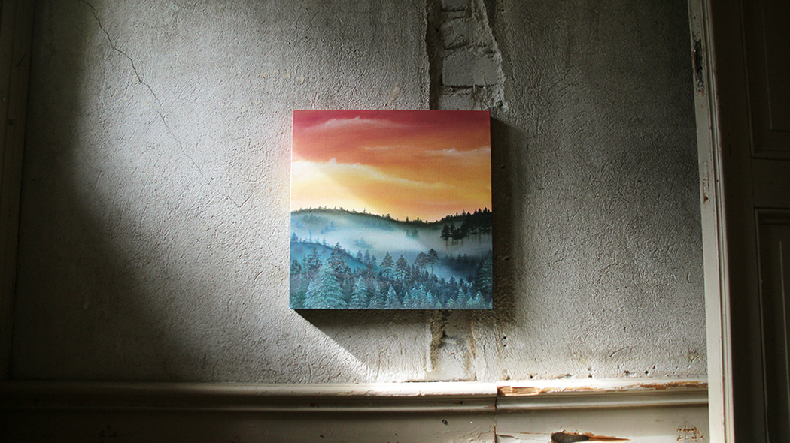

Summer project
Oasis
I had lived in Stockholm for a year and while I began to feel like home in the capital, I also went on with a constant feeling of wanting to be somewhere else. To be creative that summer was my oasis among concrete and steel. The oasis project includes three oil paintings of imaginary landscapes which are displayed in the northern Sweden.
Method: Oil
Remembering

A work in progress, exploring other animals in the world.
Method: Graphite pens, Charcoal, Photoshop